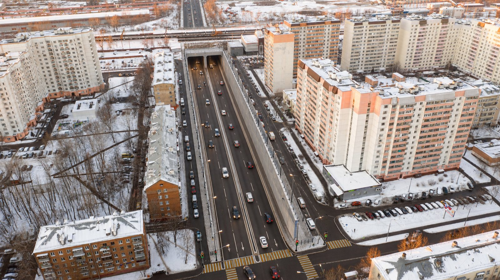
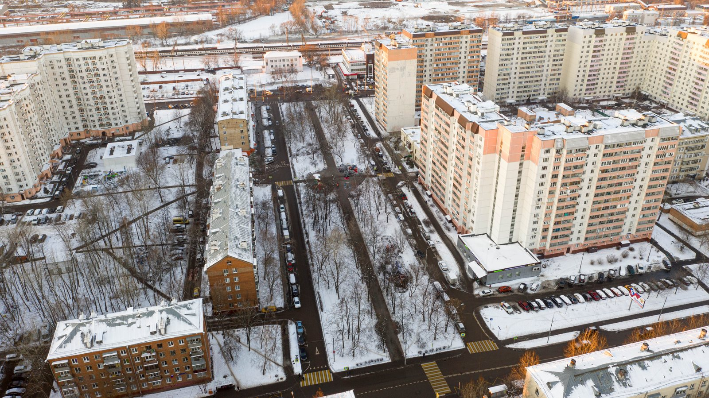
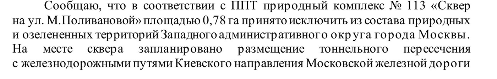
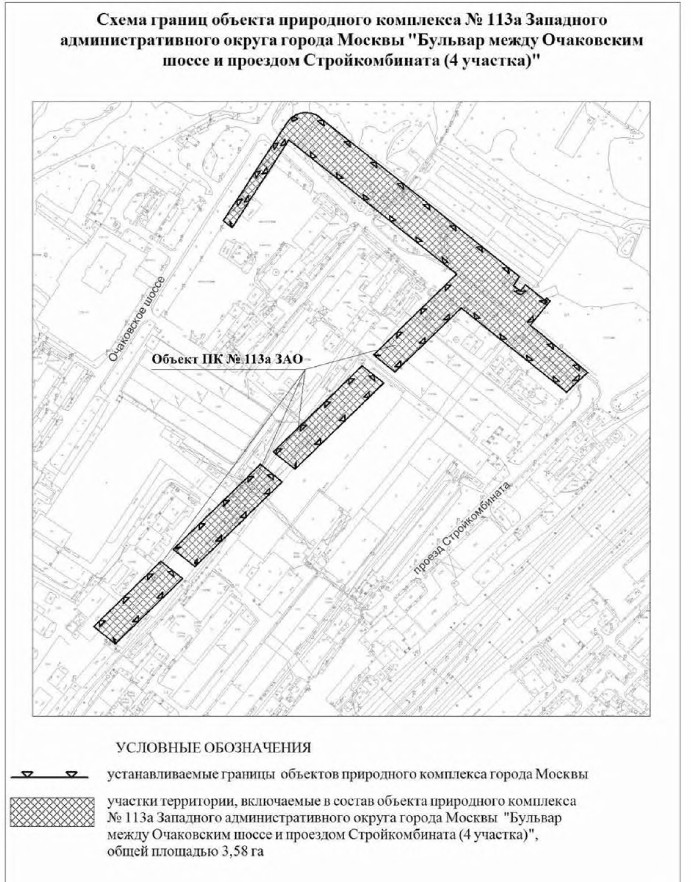
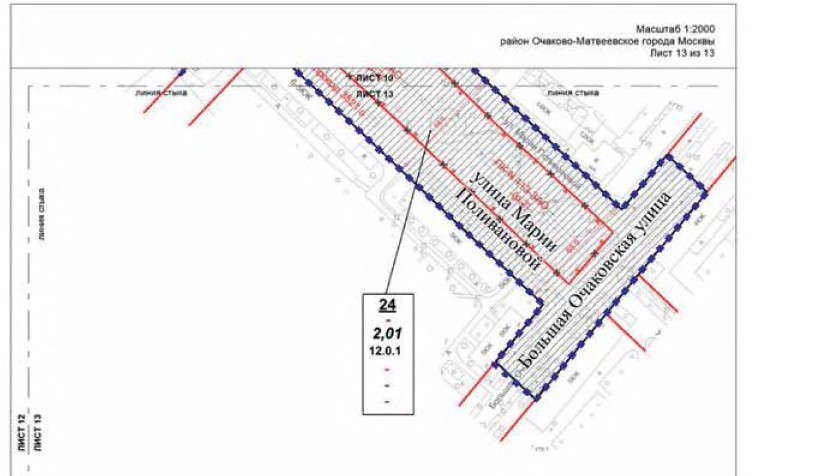
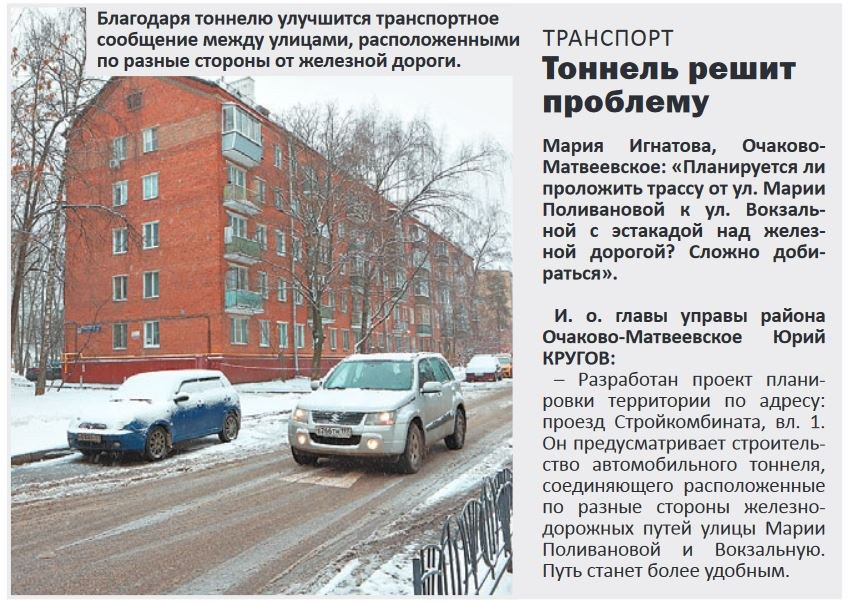
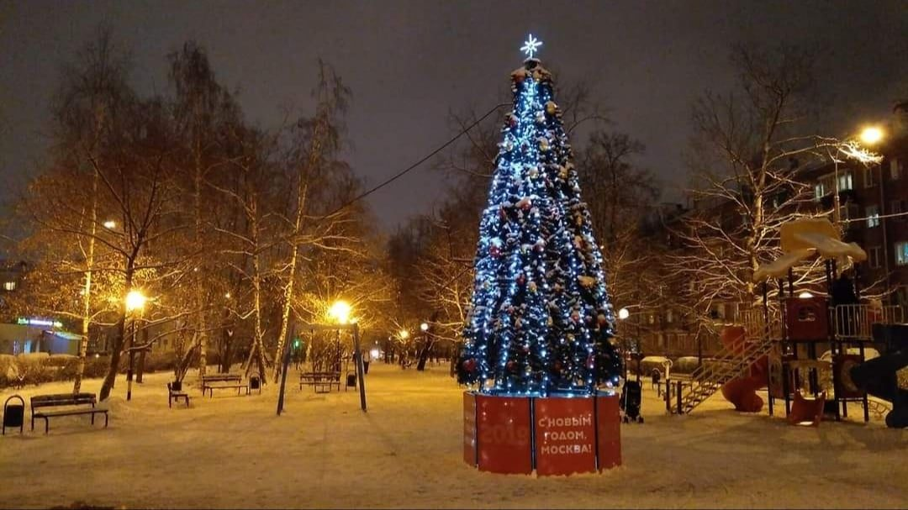
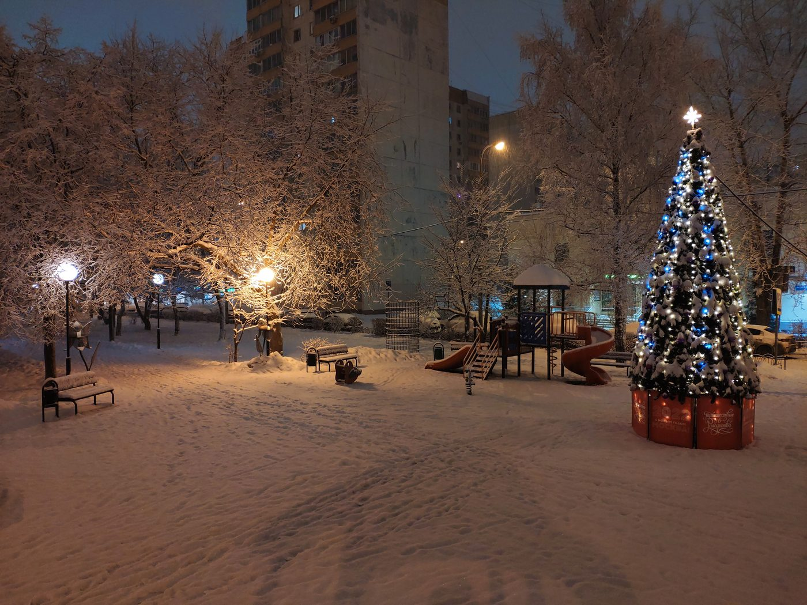
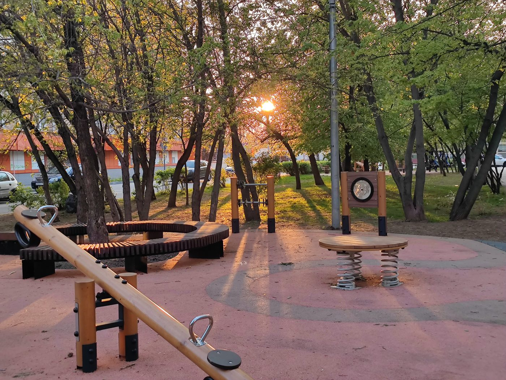

На месте сквера площадью 0,78 га постановлением Правительства Москвы предусмотрено автомобильное тоннельное пересечение под железной дорогой: 590 м с рампами, четыре полосы, котлован до 14,4 м. Договор со строителем заключён, реализация заявлена на 2029 год. Здесь сведены документы, позиция жителей и позиция города — раздельно и с указанием, чем подтверждён каждый факт.
Полную проверку карточек закупок и реестров 13.09.2026 завершить не удалось: ключевые страницы недоступны. Поэтому отсутствие новых договоров, разрешений или изменений проекта не утверждается.
Подтверждено первоисточником: постановление, техническое задание, протокол закупки, официальный ответ ведомства.
Сообщено инициативной группой. Оригиналов — подписных листов, писем, протоколов — в комплекте нет.
Арифметический ориентир, плановая дата или сведение, которое по имеющимся материалам проверить нельзя.


Это исходные требования закупки, а не опубликованная окончательная проектная документация с положительным заключением экспертизы. Площадь дендрологических работ — площадь обследования, а не установленная площадь вырубки. Компенсационное озеленение вынесено в отдельный проект другого заказчика (ДЖКХиБ) и в стройку не входит.
Госзаказчик объекта — Департамент строительства транспортной и инженерной инфраструктуры города Москвы. Его ответ жителям и есть документ, на котором держится главное утверждение этой страницы.
пропущены исходящий номер, адресат и вводная часть письма

Тем же постановлением сквер исключён из состава природных и озеленённых территорий, а севернее железной дороги образованы два других объекта природного комплекса. Это территориальная компенсация баланса — она сама по себе не подтверждает ни посадку деревьев, ни сохранение доступного жителям сквера на прежнем месте.
Приложение 2 к постановлению показывает, что образованный взамен объект № 113а — это четыре участка, вытянутые вдоль Очаковского шоссе и проезда Стройкомбината в промзоне, на северной стороне железной дороги. По постановлению объект назван «Бульвар между Очаковским шоссе и проездом Стройкомбината (4 участка)» общей площадью 3,58 га.
Второй объект, № 113б площадью 0,16 га, — территория возле образовательной организации. Вместе они дают 3,74 га и восстанавливают баланс площадей, а не сквер в границах, где он был.
Что на этих участках посажено и когда, из постановления не следует: компенсационное озеленение — отдельный проект другого заказчика, и его исполнение жители требуют раскрыть. Не подтверждено


Косой штриховкой показана зона планируемого размещения улично-дорожной сети, синим пунктиром — граница участка. Выноска подписывает участок: № 24, площадь 2,01 га, код разрешённого использования 12.0.1 — земельные участки общего пользования под объекты улично-дорожной сети.
Красной линией с крестиками вдоль улицы Марии Поливановой обозначены, по условным обозначениям листа, отменяемые границы объекта природного комплекса — это и есть сквер, исключаемый пунктом 2 постановления.
Приложение 1 к ПП № 1587-ПП, планировочная организация территории, лист 13 из 13, М 1:2000. Фрагмент листа.
Площадь участка № 24 не равна площади сквера, площади котлована или площади сплошной вырубки. Окончательный объём удаления деревьев можно установить только по дендроплану и перечётной ведомости — их в комплекте нет. Не подтверждено
Тоннель — часть дорожного проекта, связанного с реорганизацией промзоны «Южное Очаково». Проект планировки территории на 53,76 га предусматривает:
Две школы на 1100 и 300 мест, два детских сада на 350 и 275 мест, с бассейнами. Тоннель на участках № 23, 24 отнесён ко второй очереди ППТ — но жильё предусмотрено в обеих: 400,68 тыс. м² в первой и 216,82 тыс. м² во второй. Формулировка «тоннель после всего жилья» неточна. Приложение 1 к ПП № 1587-ПП
Разработчик ППТ — ГАУ «Институт Генплана Москвы», заказчик по письму института — Москомархитектура. В обращениях жители называют заказчиком АО «ПИК-Индустрия», но договор на разработку ППТ не приложен, поэтому как установленный факт это здесь не используется. Не подтверждено
Створ тоннеля взят из Перспективной схемы магистралей Генплана (закон г. Москвы № 17 от 05.05.2010 в ред. 2017). Связь обосновывается обслуживанием проектируемой застройки, подвозом к местам приложения труда и соседним проектом планировки Верейская — Аминьевское шоссе — Рябиновая; институт указывает на перегрузку Северо-Западной хорды и Аминьевского шоссе.
Институт Генплана, 22.05.2025 — позиция разработчика, требующая проверки по расчётам. Сами расчёты к ответу не приложены.
Оповещения опубликованы 30.04.2021, экспозиция и приём замечаний проходили онлайн с 12 по 25 мая. По ППТ и по изменениям правил землепользования — две разные процедуры с отдельными заключениями от 11.06.2021.
Все замечания против тоннеля под сквером — шум, вибрация, музыкальная школа, единственный сквер старой части района, предложение перенести тоннель в створ проезда № 1439 — получили рекомендацию не учитывать. Комиссия рекомендовала утвердить проект. При этом рекомендации содержат обоснования: ссылки на нормы, планировочные решения и последующую экспертизу. Само отклонение замечаний не доказывает фальсификацию обсуждений.
По ППТ 59 % участников отнесены к категории «иные»; среди них проект поддержали 96 %. Категория не означает автоматически «посторонние» — их основания участия по опубликованной таблице не устанавливаются. Не подтверждено
В первоисточнике — 272 позиции «поддерживаю» без замечаний, 19 «поддерживаю с замечаниями», 52 «не поддерживаю». Ранее в обращениях приводились 289 / 54 и 218 — они не совпадают с подсчётом строк заключения.
Позицию участника и рекомендацию комиссии нельзя считать одним показателем: строки 67 и 71 — поддержка с замечаниями, хотя комиссия замечания учитывать не рекомендует.
Проверено построчно: все 343 строки заключения № 427/21.
Обсуждения прошли в мае, постановление вышло в октябре — а широкая общественность узнала о судьбе сквера 3 декабря 2021 года, из заметки и. о. главы управы Юрия Кругова «Тоннель решит проблему» в районной газете. Статью переслали в районный чат, и только тогда жители нашли материалы обсуждений и само постановление.
Заметка отвечает на вопрос читательницы о связи улиц Марии Поливановой и Вокзальной, называет проект планировки «проезд Стройкомбината, вл. 1» разработанным, а не утверждённым — хотя постановление было подписано двумя месяцами ранее, — и сквер в ней не упомянут ни разу.
Ещё в марте 2021 года заместитель главы управы рассказывал жителям о предстоящем благоустройстве сквера, а на 2022 год благоустройство стояло в программе «Мой район». Со слов жителей

Полный архив оповещения и экспозиции в комплекте отсутствует; отсутствие наглядной визуализации не тождественно отсутствию тоннеля в чертежах.
От ремонта сквера до заключённого договора — с указанием, чем подтверждено каждое событие. Фильтр переключает состав ленты.
Подписи жителей: более 500 человек в группе (декабрь 2021), 1000+ в обращении Президенту, 2900 сканов в марте 2022, 3000+ к маю 2022, более 3100 в поздних текстах. Все цифры — со слов инициативной группы; оригиналы подписных листов в доступном комплекте отсутствуют.
Предельный объём в Адресной инвестиционной программе — 12 600 млн ₽ — сохраняется во всех трёх сохранённых редакциях. Меняется распределение по годам: в июньской редакции 2026 года основной объём уходит на 2028 год.
Все значения — млн ₽, показатели АИП. Общая шкала: 6 400 млн ₽ = полная ширина.
Чего из этой таблицы установить нельзя. «Выполнено на 01.01.2026» — графа АИП, а не акт выполненных работ и не банковский остаток. Из неё нельзя понять, сколько получил МСУ-1, сколько работ принято и какой остаток на счёте ДМИС. Графу «выполнено» и строку 2025 года нельзя складывать: это не два отдельных платежа. Разницу между 12,6 млрд ₽ и ценой закупки 11,06 млрд ₽ нельзя без расшифровки называть экономией. Не подтверждено
Закупка подтверждена; начало земляных работ — нет. Это канализационные работы, а не строительство автомобильного тоннеля. Наименование участника в протоколе не указано.
Аргументы и требования инициативной группы. Оценки нужности тоннеля и качества ответов органов не выдаются за независимое транспортное или правовое заключение.



Фотографии жителей района. Даты — по метаданным снимков; EXIF при публикации снят.
Присвоение имени, мемориальное использование и охранный статус объекта культурного наследия — разные вопросы; подтверждения уже присвоенного статуса ОКН нет.
Что по имеющимся материалам установить нельзя — и потому не утверждается ни в одну, ни в другую сторону.
Нет подписанного головного графика, актов выполнения, актуальной полной проверки разрешений и экспертизы. Даты вырубки нет. Отсутствие записи в ограниченной выборке — не доказательство отсутствия документа.
АИП подтверждает показатели программы, но не банковский остаток ДМИС, не оплату МСУ-1 и не строительную готовность. Нужны сведения об исполнении субсидии и договора.
Нет полного транспортного расчёта, исходных акустических материалов, дендроплана и перечня вырубаемых деревьев. Из наличия тоннеля в ППТ нельзя вывести число деревьев под вырубку или превышение шума.
Оба заключения получены, подсчёт по ПЗЗ исправлен. Нет полного архива экспозиции и материалов проверки участников; версия о ботах не установлена.
Часть дат, 2900 и 3000+ подписей, письмо управы, решение комиссии по наименованиям и благоустройство известны из дополнения жителей и не заменяют отсутствующие оригиналы.
Полные приложения к ПП № 1640-ПП и все последующие изменения АИП и ППТ не собраны. Реновация, благоустройство и железнодорожные работы учитываются отдельно от тоннеля.
ДСТИ и ДМИС. Подписанный договор с МСУ-1 — дата, номер, цена, дополнительные соглашения; действующий график и плановые даты подготовки территории и вырубки; объяснение соотношения 1040 дней, срока 2029 и редакций АИП; отчёт об использовании средств; статус проектирования и экспертизы.
Мосводоканал. Подписанный договор по закупке № 32616247012, наименование подрядчика, действующий календарный план; статус экспертизы, земельных документов и ордеров; соглашение № 126-26/В.
Институт Генплана и МКА. Транспортные расчёты по выбранной трассе и альтернативам, сценарий без тоннеля, нагрузка на Большую Очаковскую и Озёрную; расчёты шума с результатами для существующих домов и музыкальной школы.
МКА, управа, комиссия по наименованиям. Письмо управы от 15.12.2021 и ответ на него; протокол решения 2022 года об отложенном наименовании; полный ответ от 17.04.2024; сведения о последующих изменениях ППТ и процедуре их утверждения.
Организатор общественных обсуждений. Оповещения и полный архив экспозиций 2021 года, протоколы, сведения о проверке права участия и обезличенный состав участников.
Департамент природопользования и заказчики. Дендроплан, перечётная ведомость, порубочные документы, проект компенсационного озеленения и его исполнение; договоры и акты благоустройства 2022–2024 годов.
refs/ППТ_1587-ПП/